Ни насекомых, ни грызунов
В помещениях не должно быть насекомых, грызунов и следов их жизнедеятельности (п. 14 СП 2.1.4284-26, действует с 1 сентября 2026 года).
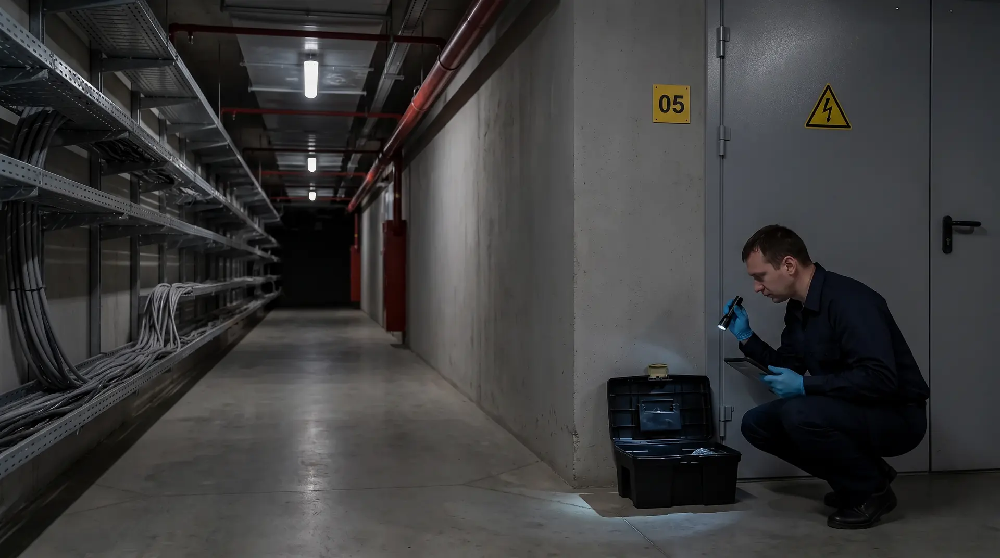
Внеплановый выезд по сигналу — в течение 3 часов, 24/7
Пест-контроль бизнес-центра, торгового центра или предприятия — это регулярная защита здания и территории от грызунов и насекомых по договору. Специалист приезжает по графику, проверяет пронумерованные точки контроля в технических и общих зонах, записывает находки в журнал и указывает, какие проходки и щели закрыть. Обработку проводят там, где мониторинг нашёл активность.
Актуально на ноябрь 2026 года
Организация, которая эксплуатирует объект, обязана сама обеспечить дезинсекцию и дератизацию: профилактику, обследования, обработки и контроль их эффективности — своими силами или через специализированную организацию (п. 88 СанПиН 3.3686-21).
Ни насекомых, ни грызунов
В помещениях не должно быть насекомых, грызунов и следов их жизнедеятельности (п. 14 СП 2.1.4284-26, действует с 1 сентября 2026 года).
2 раза в месяц
Так часто обследуют на насекомых объекты особого эпидемиологического значения, в их числе здания для постоянного или временного пребывания людей (пп. 98 и 101 СанПиН 3.3686-21).
Каждый месяц
На таких объектах дератизацию проводят по результатам ежемесячной оценки заселённости грызунами (п. 110).
Закрыть пути
При эксплуатации производственных и общественных зданий соблюдают меры, которые не дают грызунам мигрировать: заделка проходок, сетки, уплотнители (п. 111).
Только по лицензии
С 1 марта 2025 года услуги по дезинсекции и дератизации лицензируются. В местах массового пребывания людей эти работы ведёт персонал специализированной организации (п. 130).
До 90 суток
За нарушение требований к эксплуатации общественных помещений и зданий юрлицу грозит штраф 10–20 тыс. ₽ или приостановление деятельности до 90 суток (ст. 6.4 КоАП РФ).
| Что и где | Как часто | Норма |
|---|---|---|
| Обследования на насекомых в бизнес-центре и торговом центре | Не реже 2 раз в месяц | пп. 98, 101 |
| Оценка заселённости грызунами, по её итогам — дератизация | Ежемесячно | п. 110 |
| Мусорокамеры и системы мусороудаления | Не реже 1 раза в месяц | п. 133 |
| Территория и контейнерная площадка | 1 раз в месяц | п. 101 |
| Фуд-корт, столовая, продуктовый магазин арендатора | Не реже 2 раз в месяц, грызунов и насекомых быть не должно | пп. 98, 101, 128 |
| Производственные корпуса без пищевой продукции | Не реже 1 раза в месяц; кратность задаёт программа | п. 101 |
СанПиН 3.3686-21 действует до 1 сентября 2027 года. Все нормы с датами — в разделе «Нормативная база», вопросы инспектора — в разборе проверочных листов Роспотребнадзора.
0 из 6
Чего-то не хватает — на бесплатном обследовании покажем, что добавить.
Заказать бесплатное обследованиеВыберите зону на схеме или в списке — покажем, кто там заводится и какие точки контроля мы ставим.
Подвалы, паркинг, канализация, контейнерная площадка. Прогрызает монтажную пену и изоляцию кабелей.
Ходит по кабельным трассам, трубам и над подвесными потолками. Напольных станций против неё мало — проверяем верхние трассы.
Проходит в щель от 6–8 мм, приезжает с поставками, живёт в перегородках и под фальшполом.
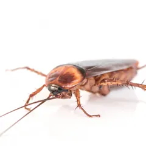
Фуд-корт, офисные кухни, вендинговые аппараты, мусорокамеры. Гели и клеевые мониторы.
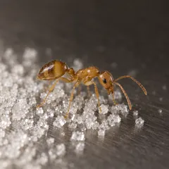
Фараоновы муравьи в отапливаемых зданиях: кухни и тёплые полости стен. Приманки по дорожкам.
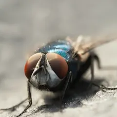
Отходы, трапы, приямки. Сначала ищем место выплода, затем ставим ловушки.
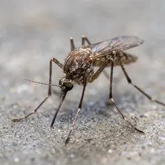
Выплаживаются круглый год в подтопленных приямках и подвалах. Убираем воду и обрабатываем места выплода.
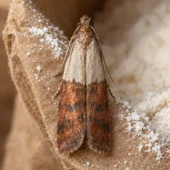
Магазины одежды и текстиля в торговом центре, склады арендаторов. Феромонные ловушки.
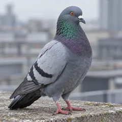
Кровля, атриумы, зоны загрузки. Осматриваем и даём рекомендации: сетки, закрытие проёмов, противоприсадочные системы. Отдельной услуги нет.
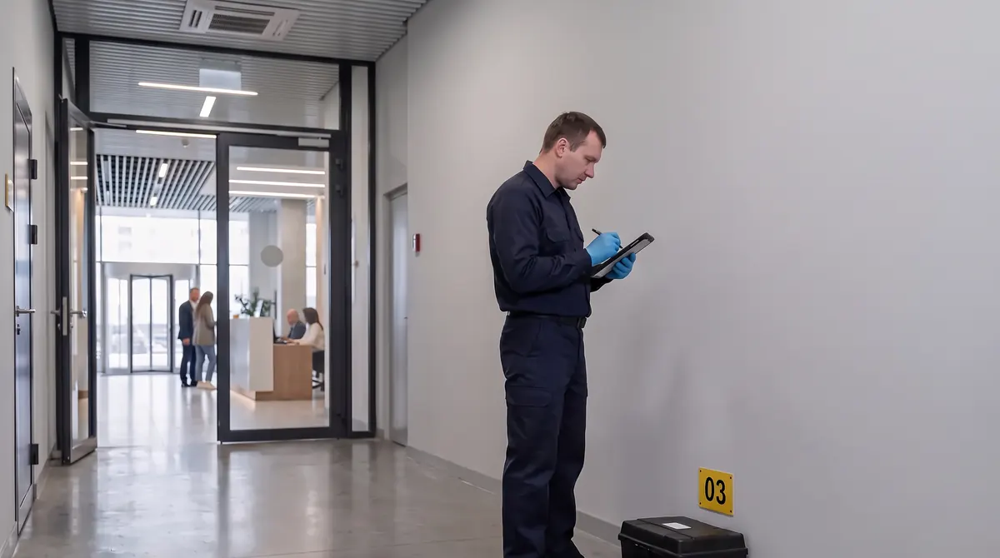
Общие зоны, паркинг, техэтажи, столовая и кафе на первом этаже. Работы в офисах — по заявкам арендаторов через управляющую компанию.
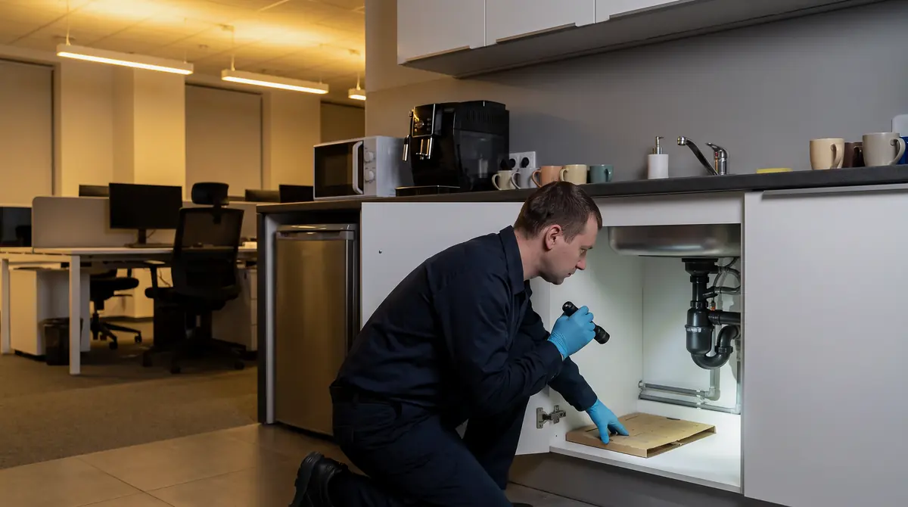
Кухни, переговорные, серверная, склад. Договор на помещение, график согласуем с правилами здания.
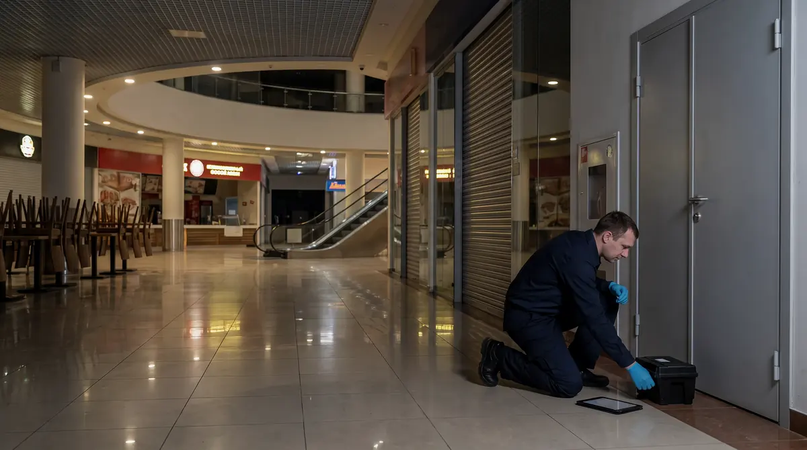
Галереи, фуд-корт, зоны загрузки, мусорокамеры, паркинг. Орошение — ночью, когда нет посетителей (п. 14 СП 2.1.4284-26).
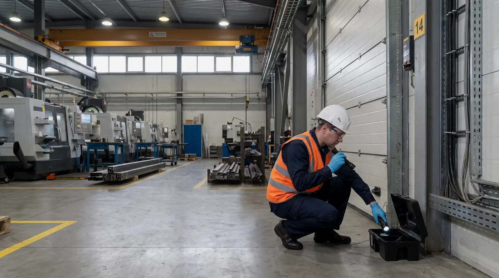
Цеха, кабельные эстакады, трансформаторные, компрессорные, склады сырья и готовой продукции, административно-бытовой корпус и столовая, территория.
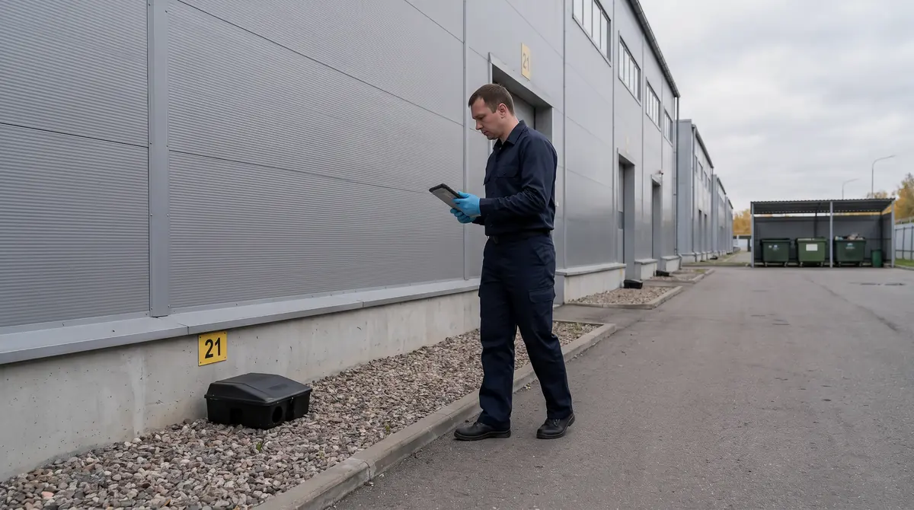
Несколько корпусов и арендаторов на одной территории: общий периметр и схема по корпусам.
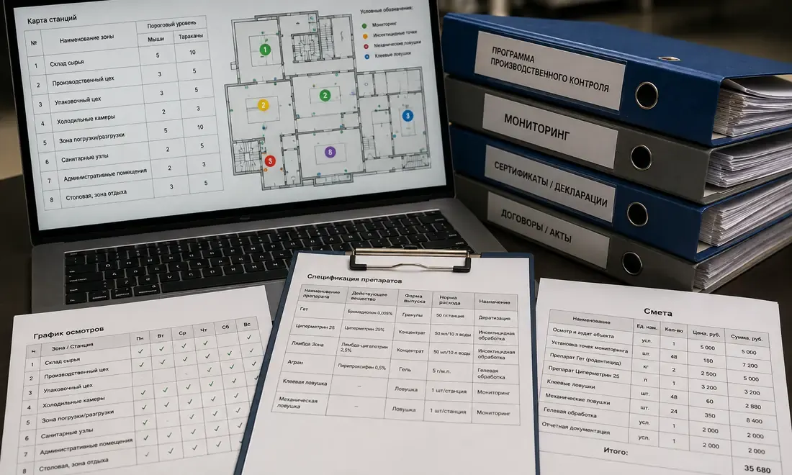
Один договор на несколько зданий, единый график и сводный отчёт по портфелю.
Пищевое производство, склад, продуктовый магазин или ресторан в здании обслуживаем по своим программам: пест-контроль пищевых производств, складов и логистики, магазинов и торговых сетей, ресторанов и кафе.
За общие зоны, инженерные помещения и территорию отвечает тот, кто эксплуатирует здание — собственник или управляющая компания. За арендованное помещение отвечает арендатор: требования санитарных правил адресованы тому, кто ведёт в нём деятельность. Границы записывают в договоре аренды.
| Зона | Кто обычно отвечает | Что делаем мы |
|---|---|---|
| Территория, паркинг, подвал, техэтажи, мусорокамеры | Управляющая компания | Схема точек, плановые визиты, журнал и акты |
| Общие коридоры, санузлы, зоны загрузки | Управляющая компания | Мониторинг, обработки по результатам |
| Офис, магазин, склад арендатора | Арендатор | Отдельный договор или работы по заявке через управляющую компанию |
| Ресторан, кафе, продуктовый магазин арендатора | Арендатор | Программа с кратностью для пищевых объектов, свой журнал |
Вредители не знают границ аренды: тараканы и мыши переходят между помещениями по шахтам и потолкам. Поэтому ведём одну схему на здание и стыкуем графики с подрядчиками арендаторов — чтобы не оставалось ничьих зон.
Проверка точек, клеевые мониторы и гели работают без запаха и не требуют выводить людей.
Если нужна обработка распылением, проводим её без сотрудников и посетителей (п. 14 СП 2.1.4284-26). Ночь и выходные — без наценки.
Управляющая компания и арендаторы получают дату, время и меры предосторожности (п. 102 СанПиН 3.3686-21).
В щитовых и серверных ставим ловушки, чтобы грызун не погиб внутри оборудования.
Работаем по правилам объекта: заявки на пропуск, сопровождение службой эксплуатации, инструктаж на предприятии.
Внеплановый выезд по договору, 24/7.
Осматриваем территорию, паркинг, подвал, техэтажи, мусорокамеры и общие зоны, фотографируем следы и пути проникновения.
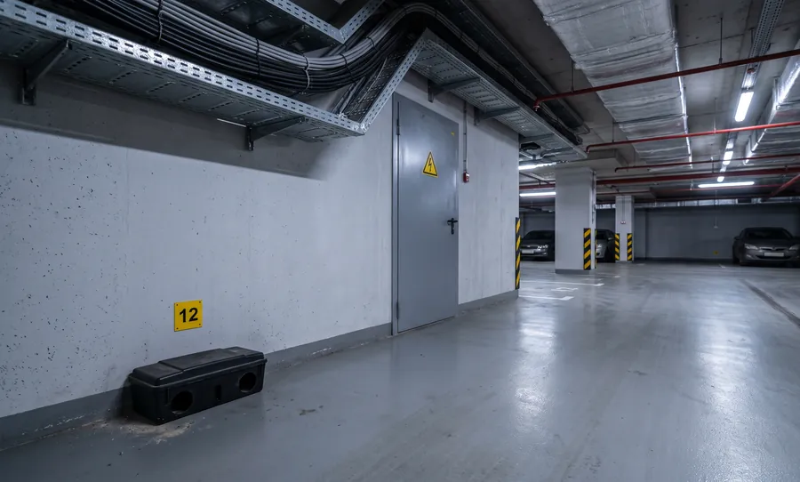
В течение 1 часа после осмотра присылаем проект договора: зоны, точки контроля, график визитов, стоимость.
Ставим и нумеруем станции и ловушки, наносим их на план, заводим журнал. Если есть активный очаг — сначала обрабатываем его.
Передаём службе эксплуатации перечень проходок, продухов и щелей с фотографиями: что закрыть металлом или сеткой.
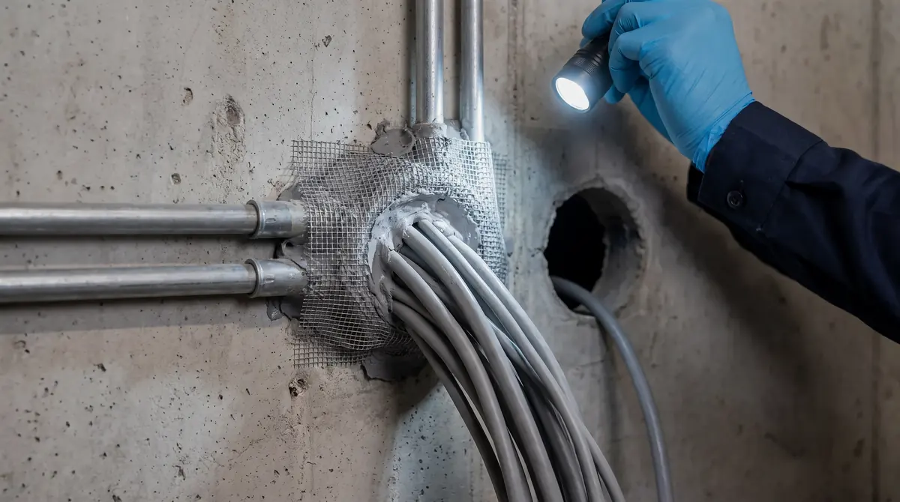
Проверяем точки по графику, записываем результаты, обрабатываем по показаниям, раз в месяц присылаем сводный отчёт.
Крыса перегрызла кабель в щитовой
Арендаторы жалуются на тараканов на этаже
Мышь в торговой галерее днём
В паркинге круглый год комары
Сменили управляющую компанию, документов нет
Типовые ситуации, а не описания конкретных клиентов.
Заказать обследованиеСтоимость зависит от площади и этажности, числа технических зон и точек контроля, территории и кратности визитов. Расчёт со схемой точек присылаем в течение 1 часа после бесплатного обследования.
| Объект или работа | Что входит | Ориентир |
|---|---|---|
| Бизнес-центр, торговый центр, производственная площадка | Общие и технические зоны, территория, плановые визиты, журнал, акты, сводный отчёт | после бесплатного обследования |
| Офис или помещение арендатора | Плановые визиты, мониторы и гели, журнал и акты | от 3 500 ₽ в месяц |
| Разовая обработка при очаге | Выезд, поиск очага, обработка, акт, контроль через 10–14 дней | от 3 500 ₽ за выезд |
| Точки контроля на старте | Станции и ловушки с установкой и нумерацией | от 600 ₽ за точку |
| Несколько зданий одной управляющей компании | Единый договор, общий график, сводный отчёт | после обследования |
Площади паркинга, подвалов и техэтажей; числа мусорокамер и зон загрузки; наличия фуд-корта, столовой, продуктовых арендаторов; территории и контейнерной площадки; кратности визитов; требований к отчётности.
Ночные визиты и выходные — без наценки. Работаем с НДС и без НДС, документы — на бумаге или по ЭДО.
При переходе на годовой договор стоимость первой обработки учитывается в расчёте.
Рассчитать для моего объектаДа. Юрлица и ИП обеспечивают дезинсекцию и дератизацию на объектах, которые эксплуатируют (п. 88 СанПиН 3.3686-21), а в помещениях не должно быть насекомых, грызунов и следов их жизнедеятельности (п. 14 СП 2.1.4284-26).
Обследования на насекомых — не реже 2 раз в месяц, оценка заселённости грызунами — каждый месяц (пп. 98, 101, 110 СанПиН 3.3686-21). Обработки проводят по результатам обследований. Мусорокамеры осматривают не реже раза в месяц.
Минимум по п. 101 СанПиН 3.3686-21 — обследование раз в месяц. Для столовой и складов пищевой продукции — не реже 2 раз в месяц и ежемесячная оценка по грызунам. Точную кратность по корпусам записываем в программе после обследования.
За общие зоны, технические помещения и территорию — тот, кто эксплуатирует здание. За арендованное помещение — арендатор. Границы указывают в договоре аренды; мы ведём общую схему, чтобы не оставалось ничьих зон.
Осмотры, клеевые мониторы, ловушки и гелевые приманки — да, они без запаха. Обработку распылением проводят в отсутствие работников и посетителей (п. 14 СП 2.1.4284-26): ночью или в выходной, без наценки.
Крысы и мыши грызут изоляцию кабелей и утеплитель, ходят по кабельным трассам и шахтам. Итог — короткое замыкание, отказ слаботочных систем и остановка оборудования. Поэтому точки контроля ставим у вводов, в подвале и на техэтажах, а в щитовых — ловушки вместо приманок с ядом.
Сообщить управляющей компании или позвонить нам. По договору внеплановый выезд — в течение 3 часов, 24/7. Специалист ищет источник, ставит точки контроля и записывает меры в журнал.
Договор, программу, схему точек контроля, журнал учёта, акт после каждого визита, СГР и инструкции на средства, сводный отчёт за месяц.
Да. С 1 марта 2025 года услуги по дезинсекции и дератизации оказывают только по лицензии. Работы ведёт ООО «Центр дезинфекционных услуг», лицензия № Л064-00111-77/01942445 — запись можно проверить в реестре лицензий Роспотребнадзора.
Стоимость считаем после бесплатного обследования: она зависит от площади технических зон, числа точек контроля и кратности визитов. Офис или помещение арендатора — от 3 500 ₽ в месяц, разовая обработка — от 3 500 ₽ за выезд.
Да, по отдельным программам: для них выше кратность обследований и свои требования к документам. Подробности — на страницах ресторанов и кафе, магазинов и торговых сетей.
Да. Для управляющих компаний делаем единый договор, общий график визитов и сводный отчёт по всем объектам.
Оставьте контакты — перезвоним, уточним тип и площадь объекта и согласуем день выезда. Обследование ни к чему не обязывает.